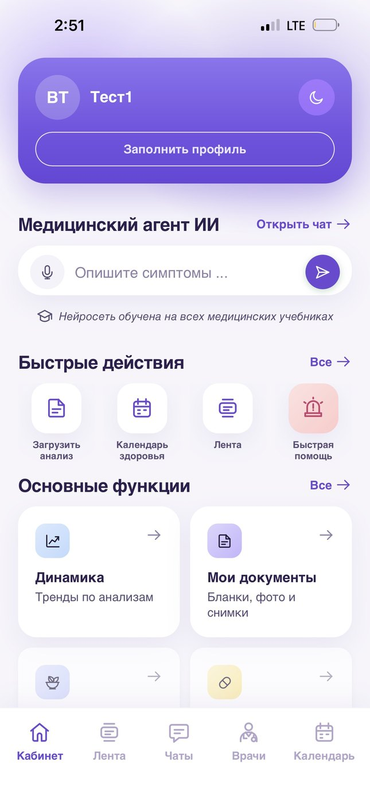

Личная медицинская команда вашей семьи
Вам больше не нужно думать о здоровье самим.

Здоровье семьи держится на вас
Вы одновременно пациент, координатор, архивариус и диспетчер — для себя, детей и родителей.
Десятки врачей
У каждого свой кабинет, своя клиника и свой фрагмент картины.
Противоречивые мнения
Два специалиста — два разных назначения. Кому верить?
Потерянные анализы
Результаты в мессенджерах, почте и бумажных папках.
Что и когда проверять
Какие обследования нужны по возрасту — вовремя никто не подскажет.
Экстренная ситуация
В критический момент неясно, кому звонить и куда ехать.
И всё это держится в голове одного человека — в вашей.
Хаос обходится дороже, чем кажется
Платить приходится не деньгами, а тем, что потом сложно вернуть.
Время
Часы на поиск врачей, записи, очереди и пересказ истории заново.
Нервы
Постоянная тревога: всё ли сделано, ничего ли не упущено.
Упущенные угрозы
Тревожные изменения в анализах остаются без внимания.
Поздняя диагностика
Болезнь обнаруживают тогда, когда лечить уже сложнее.
Хаос в критический момент
Минуты уходят на поиск контактов вместо помощи.
Консилиум вместо семейного врача
Постоянная медицинская команда, которая знает историю каждого члена семьи и сама ведёт её здоровье.
Консилиум ведёт семью.
Семейный врач
- Вы приходите, когда что-то беспокоит
- Помнить о проверках — ваша задача
- История разбросана по клиникам
Консилиум
Одна постоянная команда для всех поколений: ведущий врач, профильные специалисты, координатор и ИИ-помощник.
- Ведёт историю каждого члена семьи
- Сама напоминает, что и когда сделать
- Расшифровывает анализы
- Направляет к нужным врачам
- Контролирует выполнение плана
Четыре вектора заботы
Команда работает сразу на четырёх направлениях — от профилактики до сопровождения сложных диагнозов.
Улучшение здоровья
Ежедневные привычки и цели на каждый месяц
Поиск потенциальных угроз
Раннее выявление того, что ещё не проявилось
Решение сложных проблем
Когда мнения расходятся или случай запутан
Ведение серьёзных диагнозов
Постоянное сопровождение хронических и тяжёлых состояний
Команда всегда на связи
Никаких записей и очередей: вопросы решаются в переписке, а план обновляется каждый месяц.
Общий чат с командой
У каждого члена семьи — свой чат со всеми врачами команды. Писать можно в любое время.
Обзор и личный план
Каждый месяц команда подводит итоги и обновляет план для каждого члена семьи.
- 01
Знакомство
Встреча, цели и запросы семьи
- 02
Стартовая оценка
История, анализы и документы каждого
- 03
План здоровья на год
Обследования, профилактика и цели
- 04
Ежемесячное сопровождение
Обзор, корректировка плана, связь с командой
Вся семья — в одном приложении
Медицинский ИИ-агент
Помощник для вопросов и подготовки к приёму. Решения принимает врач
Загрузка анализов
Фото бланка — и понятная расшифровка
Календарь здоровья
Обследования и напоминания для каждого
Динамика показателей
Тренды по анализам за всё время
Мои документы
Бланки, фото и снимки в одном месте
Чаты с врачами
Связь с командой без записи и очередей
Быстрая помощь
Быстрый доступ к экстренному сценарию
Команда, которая знает вашу семью
Постоянные люди, а не случайные приёмы. Каждый отвечает за свою часть заботы.
Ведущий врач
Знает историю всей семьи и отвечает за план здоровья каждого.
Консилиум специалистов
Профильные врачи подключаются под конкретную задачу.
Медицинский координатор
Записи, документы и сроки — берёт организацию на себя.
ИИ-помощник
Хронология и напоминания. Клинические решения — всегда за врачом.
Экстренный контур
Когда счёт идёт на минуты, у семьи уже есть план — и люди, которые помогут его выполнить.
Протоколы заранее
Для инсульта, инфаркта и травм заранее прописано: что делать, куда ехать, кому звонить.
Лучшие специалисты — быстро
Быстрый выход на нужных специалистов через сеть консилиума.
Координатор рядом
В критический момент координатор рядом с семьёй и берёт организацию на себя.
Что получает семья
Здоровье перестаёт быть ещё одной вашей обязанностью.
Спокойствие
За вас думают, что и когда делать
Одна команда
Вместо десятков разрозненных врачей
Единая история
Не теряется при смене клиники
Связь в любое время
Без записи и очередей
Раннее выявление
Угрозы замечают раньше
Лучшие специалисты
Доступ в сложных и срочных случаях
Все поколения
Дети, родители и вы
Конфиденциальность
Раздельные данные для каждого члена семьи
Формат под вашу семью
Базовый
Порядок в истории и анализах
- Ведение медицинской истории
- Календарь анализов
- Расшифровка анализов
- Чат с врачами команды
Расширенный
Полноценная команда для семьи
- Консилиумы по сложным вопросам
- Ведение серьёзных диагнозов
- Персональный координатор
Премиум
Максимальная защита и приоритет
- Экстренный контур
- Приоритетный доступ к топ-специалистам
- Сопровождение госпитализаций
В подписку входит работа команды. Услуги клиник, анализы, операции и лекарства оплачиваются отдельно. Условия согласуются до подключения.
Начнём с вашей семьи
Встреча-знакомство
Обсуждаем семью, запросы и цели — без обязательств.
Программа и условия
Предлагаем состав команды, план и формат подписки.